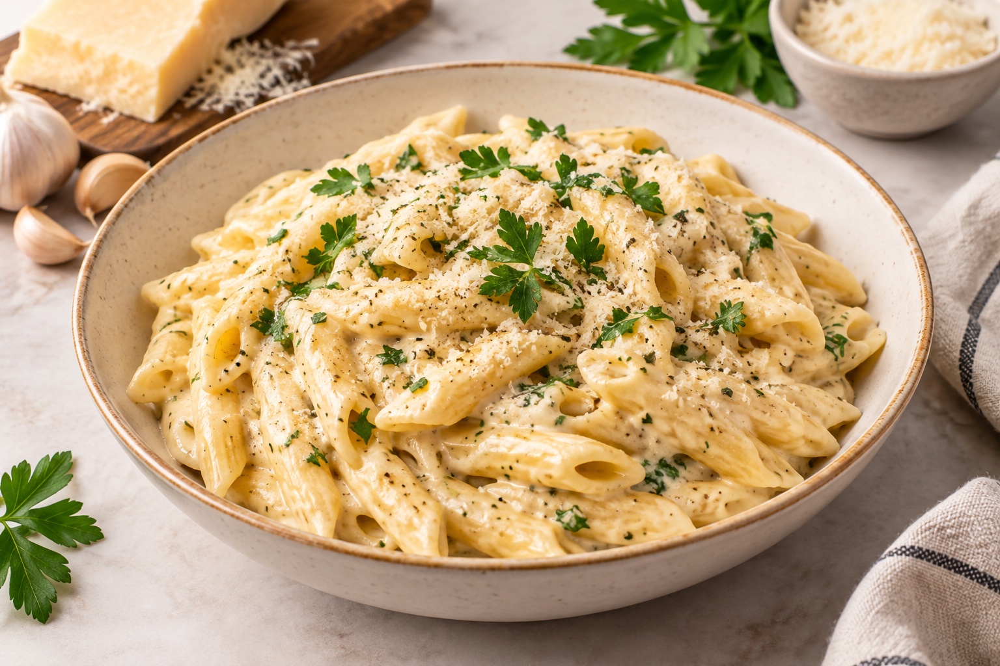

Creamy Garlic Parmesan Pasta
A rich and comforting pasta dish made with tender pasta,
garlic, cream, and Parmesan cheese. This quick and delicious
recipe is perfect for an easy lunch or dinner and can be
customized with vegetables or grilled chicken.
Preparation Time
- Total: Approximately 25 minutes
- Preparation: 10 minutes
- Cooking: 15 minutes
Ingredients
- 200g pasta of your choice
- 2 tablespoons butter
- 3 cloves garlic, finely chopped
- 1 cup heavy cream
- ½ cup grated Parmesan cheese
- ½ teaspoon black pepper
- ½ teaspoon salt, or to taste
- ½ teaspoon Italian seasoning
- 2 tablespoons chopped fresh parsley
- ¼ cup pasta water, if needed
- Optional: grilled chicken, mushrooms, or broccoli
Instructions
-
Cook the pasta:
Bring a large pot of salted water to a boil.
Add the pasta and cook according to the package
instructions until tender. Reserve about ¼ cup
of pasta water, then drain the pasta.
-
Prepare the garlic:
Melt the butter in a large pan over medium heat.
Add the chopped garlic and cook for about 30–60
seconds until fragrant.
-
Make the sauce:
Pour the heavy cream into the pan and stir gently.
Add black pepper, salt, and Italian seasoning.
Let the sauce simmer for 2–3 minutes.
-
Add Parmesan:
Reduce the heat and gradually stir in the grated
Parmesan cheese until it melts and the sauce
becomes smooth and creamy.
-
Combine the pasta:
Add the cooked pasta to the sauce and toss well
until every piece is coated.
-
Garnish and serve:
Sprinkle fresh parsley and extra Parmesan on top.
Serve immediately while warm and creamy.
-
Enjoy:
Serve with garlic bread or a fresh salad.
Nutrition
The values below are approximate and may vary depending
on the ingredients and serving size.
| Nutrient |
Per Serving |
| Calories |
520 kcal |
| Carbohydrates |
55g |
| Protein |
14g |
| Fat |
27g |
| Fiber |
3g |
| Sodium |
480mg |
Servings: 2–3 servings